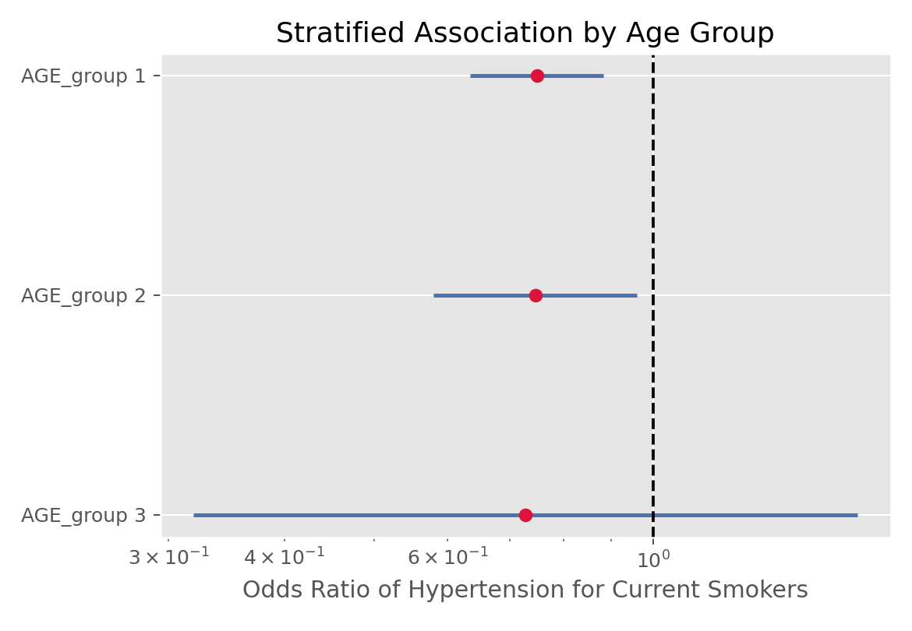

Mantel-Haenszel检验
Mantel-Haenszel检验（Mantel-Haenszel Test）
方法概览
1.1 一句话本质
Mantel-Haenszel 把数据按一个混杂因素（如年龄）分层，在每一层里干净地看暴露与结局的关联，再把各层的关联加权合并成一个「已调整」的比值比——从而在不建回归模型的情况下控制混杂。
1.2 定义
Mantel-Haenszel（Cochran-Mantel-Haenszel, CMH）方法用于分层 2×2 列联表，在控制一个分类混杂因素的前提下检验暴露与结局的关联，并给出合并的比值比 $\mathrm{OR}_{MH}$。
1.3 它主要解决什么问题
- 研究问题：在控制某个分层因素后，暴露与结局是否仍相关、关联多强？
- 适用任务：混杂调整的关联检验、合并多个 2×2 表、分层设计分析。
- 常见医学场景：控制年龄段后评估暴露与疾病的关联、合并多中心/多研究的 2×2 结果、匹配分层分析。
1.4 直觉与类比
假设整体上「喝咖啡的人更容易失眠」，但其实是「年轻人既爱熬夜喝咖啡、又本就睡得晚」在作怪。把人按年龄分层后，在每个年龄层内单独看咖啡与失眠的关系，混杂就被「关」在层内、不再干扰。MH 就是先在各层内看干净的关联，再把它们合成一个总的调整后关联——避免了辛普森悖论。
核心思想与原理
2.1 它到底在解决什么根本困难
一个混杂因素同时影响暴露和结局，会歪曲甚至反转整体关联（辛普森悖论）：把所有人混在一张表里算出的「粗 OR」可能完全误导。根本困难是：如何在不做完整回归建模的情况下，剔除某个分类混杂因素的影响？
2.2 关键洞察
分层是控制混杂最直接的手段：在同一层内，混杂因素取值相同，于是层内的暴露-结局关联不再被它污染。MH 的巧妙在于如何合并各层——用一套权重（与各层样本量、边际有关）对层内 OR 加权平均，使合并估计在「各层真实 OR 相同」时高效且稳健。CMH 检验则把各层「观测的病例数」与其在独立假设下的期望累加比较。
2.3 与朴素/相邻做法的对比
- 相对直接算粗 OR：MH 控制了分层混杂，避免辛普森悖论。
- 相对 Logistic 回归：MH 简单、无需拟合模型、对稀疏分层稳健；Logistic 更灵活、可调多个连续/分类混杂。
- 相对逐层单独看：MH 把各层证据合并为一个更有力的总体结论。
数学形式
3.1 核心公式
各层 $i$ 的 2×2 表记为 $\begin{smallmatrix}a_i & b_i\\ c_i & d_i\end{smallmatrix}$，层内总数 $n_i$，合并比值比：
$$ \mathrm{OR}_{MH}=\frac{\sum_i a_i d_i / n_i}{\sum_i b_i c_i / n_i} $$
这个式子在说：把每层的「支持正关联的证据」$a_i d_i/n_i$ 和「支持负关联的证据」$b_i c_i/n_i$ 分别按层累加，再相除，得到调整后的总 OR。
3.2 推导脉络
- 在每层内，若暴露与结局独立，则病例数 $a_i$ 的期望 $E_i=\dfrac{(a_i+b_i)(a_i+c_i)}{n_i}$、方差 $V_i$ 由超几何分布给出。
- CMH 统计量把各层的 $a_i-E_i$ 累加再平方除以总方差：$\chi^2_{CMH}=\dfrac{(\sum_i a_i-\sum_i E_i)^2}{\sum_i V_i}$，近似自由度 1 的卡方。
- $\mathrm{OR}_{MH}$ 是层内 OR 的加权合并，权重 $\propto b_i c_i/n_i$，对稀疏层稳健。
- 合并前应检验各层 OR 是否一致（Breslow-Day 齐性检验）；不齐则合并意义存疑。
3.3 参数与统计量含义
- $a_i,b_i,c_i,d_i$：第 $i$ 层 2×2 表的四格。
- $\mathrm{OR}_{MH}$：调整后的合并比值比。
- $\chi^2_{CMH}$：控制分层后的关联检验统计量。
- Breslow-Day：层间 OR 齐性检验。
3.4 关键假设（含违反后果）
| 假设 | 含义 | 违反后会怎样 | 如何粗查 |
|---|---|---|---|
| 层内独立 | 每层是独立 2×2 | p/OR 失真 | 看设计 |
| OR 齐性 | 各层真实 OR 相近 | 合并 OR 无意义 | Breslow-Day 检验 |
| 混杂已分层 | 关键混杂被纳入分层 | 残余混杂 | 领域知识 |
手把手算例
按年龄分两层，看暴露 $E$ 与疾病 $D$ 的关联：
- 层 1（年轻）：$a_1=10,\ b_1=20,\ c_1=5,\ d_1=25$，$n_1=60$。
- 层 2（年长）：$a_2=30,\ b_2=10,\ c_2=15,\ d_2=15$，$n_2=70$。
一步步计算：
- 分子各项 $a_i d_i/n_i$：层 1 $=10\times25/60=4.167$；层 2 $=30\times15/70=6.429$；合计 $10.60$。
- 分母各项 $b_i c_i/n_i$：层 1 $=20\times5/60=1.667$；层 2 $=10\times15/70=2.143$；合计 $3.81$。
- 合并：$\mathrm{OR}_{MH}=\dfrac{10.60}{3.81}=2.78$。
- 对比粗 OR（把两层合成一张表 $a{=}40,b{=}30,c{=}20,d{=}40$）：$\mathrm{OR}_{\text{粗}}=\dfrac{40\times40}{30\times20}=2.67$。
结论： 调整年龄后暴露与疾病的 OR 约 2.78。本例粗 OR（2.67）与调整 OR（2.78）接近，说明此处年龄的混杂作用不强；但当粗 OR 与 $\mathrm{OR}_{MH}$ 差别很大（甚至方向相反）时，就暴露出严重混杂——这正是 MH 的价值。合并前应先用 Breslow-Day 确认两层 OR 大体一致，否则应分层报告而非合并。
数据形式与输入输出
5.1 适合的数据形式
- 自变量类型：暴露（二分类）+ 分层因素（分类）。
- 因变量类型：二分类结局。
- 数据结构：多层 2×2 表。
- 是否适合高维数据：分层数不宜过多、过稀。
- 是否适合缺失较多数据：先处理缺失。
- 是否适合删失数据：不适合。
- 是否适合重复测量数据：不适合。
5.2 示例表格
| 层 | a | b | c | d | 层内 OR |
|---|---|---|---|---|---|
| 年轻 | 10 | 20 | 5 | 25 | 2.50 |
| 年长 | 30 | 10 | 15 | 15 | 3.00 |
5.3 输入与产出
输入
- 输入数据：按分层因素拆分的多张 2×2 表。
- 关键变量：暴露、结局、分层因素。
- 需要预处理的内容：分层、检查各层非空、齐性检验。
产出
- 模型对象/统计结果：$\mathrm{OR}_{MH}$、CMH $\chi^2$、p 值。
- 参数估计：合并 OR 及其区间。
- 预测结果：无。
- 不确定性指标：$\mathrm{OR}_{MH}$ 的置信区间、Breslow-Day p。
适用场景
- 适合：控制一个分类混杂、合并多个 2×2、分层/匹配设计。
- 不适合：需调整多个连续混杂（用 Logistic）、各层 OR 明显不齐时的合并。
- 使用前需要特别检查的点：层间 OR 齐性、层是否过稀、混杂是否恰当分层。
实现
常用包：
statsmodels
import numpy as np
from statsmodels.stats.contingency_tables import StratifiedTable
# 每层为 [[a, b], [c, d]]
tables = [np.array([[10, 20], [5, 25]]),
np.array([[30, 10], [15, 15]])]
st = StratifiedTable(tables)
print("OR_MH =", round(st.oddsratio_pooled, 2)) # 2.78
print(st.test_null_odds()) # CMH 检验
print(st.test_equal_odds()) # Breslow-Day 齐性
常用包：
stats
arr <- array(c(10,5,20,25, 30,15,10,15), dim = c(2,2,2))
mantelhaen.test(arr) # OR_MH、CMH 卡方与 p
结果如何解读
- 核心结果看什么：$\mathrm{OR}_{MH}$ 及区间、CMH p、与粗 OR 的差异、Breslow-Day。
- 每个主要参数如何解读：$\mathrm{OR}_{MH}$ 是调整后关联；与粗 OR 差别大提示混杂。
- 临床或医学意义如何表达：报告「调整某因素后的 OR 及区间」，说明混杂被控制。
- 常见误读：各层 OR 不齐仍报一个合并 OR；把 MH 当成能控制所有混杂。
假设诊断与稳健性
- 齐性：先做 Breslow-Day；若各层 OR 差异大（有效应修饰），应分层报告而非合并。
- 稀疏层：MH 对含零格/小层比 Logistic 稳健，但层过稀仍不稳。
- 残余混杂：MH 只控制被分层的因素，其他混杂仍在，需领域判断。
- 连续混杂：连续变量分层会有残余混杂，宜用回归。
推荐可视化
- 各层 OR + 合并 OR 的森林图。
- 分层前后（粗 vs 调整）OR 对比。
- 各层暴露-结局比例并列条形图。
10.1 图像示例
下图展示按年龄段分层后各层与合并的比值比。

优势、局限与常见坑
优势
- 简单地控制一个分类混杂，避免辛普森悖论。
- 无需拟合模型，对稀疏分层稳健。
- 直接给可解释的合并 OR。
局限
- 一次只便于控制一个（少数）分类混杂。
- 各层 OR 不齐时合并意义存疑。
- 连续混杂需分箱，有残余混杂。
常见坑
- 不查齐性就报合并 OR。
- 用它控制多个连续混杂（应回归）。
- 分层过细导致层内样本太少。
与相近方法的区别
- 和 Pearson 卡方：卡方不控制混杂，MH 分层控制一个混杂。
- 和 Logistic 回归：MH 简单稳健但只调少数分类混杂；Logistic 可调多个连续混杂。
- 和分层单独分析：MH 合并各层证据得总体结论。
- 如何选择：单个分类混杂、稀疏数据 → MH；多混杂、需建模 → Logistic。
医学研究中的典型应用
- 控制年龄/性别后评估暴露与疾病关联。
- Meta 分析式合并多个 2×2 研究结果。
- 匹配或分层病例对照研究的分析。
关键术语
- 混杂（Confounding）：同时影响暴露与结局、歪曲关联的第三变量。
- 分层（Stratification）：按混杂因素分组，在层内看干净关联。
- 合并比值比（$\mathrm{OR}_{MH}$）：各层 OR 的加权合并。
- 辛普森悖论：分层与合并关联方向相反的现象。
- Breslow-Day 检验：各层 OR 是否一致（无效应修饰）的检验。
- 效应修饰：关联强度随分层因素改变，此时不宜合并。
相关方法
参考资料
- Mantel N, Haenszel W. Statistical aspects of the analysis of data from retrospective studies of disease. J Natl Cancer Inst. 1959;22(4):719-748.
- Cochran WG. Some methods for strengthening the common chi-squared tests. Biometrics. 1954;10(4):417-451.
- Rothman KJ, Greenland S, Lash TL. Modern Epidemiology. 3rd ed. Lippincott; 2008.